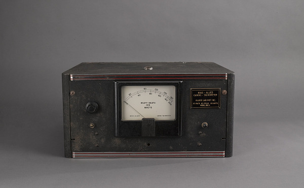
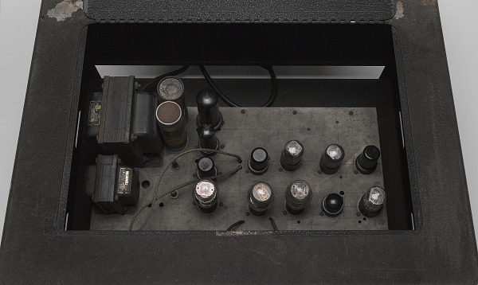
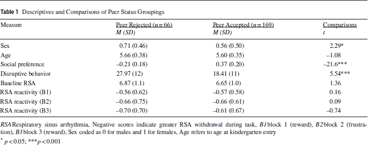
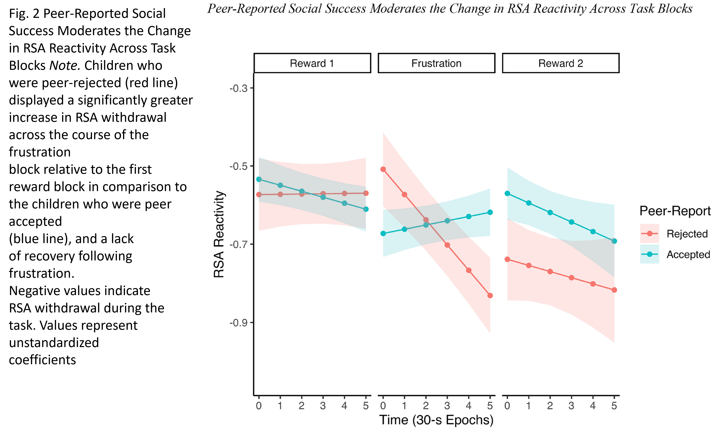

Jump Pack to Home
Use the link below or in the bottom left to navigate to the main page
A Presentation by:
C. M.
Department of Psychology
The Article
Association Between Dynamic Parasympathetic Reactivity to Frustration and Children’s Social Success with Peers in Kindergarten
Fry, Cassidy, Gatzke-Koppe, Lisa, M. (2021)
Background
Topic Psychophysiology
The Polyvagal Perspective
Psychophysiology transforms unobservable psychological or mental processes into measurable physiological data
The Cardiotachometer
 
Background
Appropriate regulatory skills are needed to temper dysregulated responding and redirect frustration in a more positive and prosocial direction
Polyvagal Theory (Porges 2007)
Through polyvagal theory we endeavor to understand the reciprocal influences and bidirectional communication between the heart and the central nervous system
The polyvagal perspective relates autonomic nervous system (ANS) function to behavior. This perspective includes the ANS, neural circuits involved in the regulation of autonomic state, and an interpretation of autonomic reactivity as adaptive
Key Terms
Anterior Insula
activation of anterior insula in goal-blockage and other prefrontal regions associated with processing emotional pain
role of anterior insula in autonomic control
Emotional Regulation
This refers to the process of monitoring, evaluating and modulating emotional reactions with the purpose of goal attainment For example upregulating excitement, or dampening frustration to facilitate positive interpersonal interactions
Children who struggle to regulate strong emotional reactivity are more likely to violate social norms
Respiratory Sinus Arrhythmia
Respiratory sinys arrhythmia (RSA) is heart rate variability in synchrony with respiration by which the R-R interval on an ECG is shortened during inspiration and prolonged during expiration (Yasuma, F. , Hayano, J 2004)
RSA is utilized as a physiological index of emotoion regulation, or biomarker of dysregulation (Zhang, W., Fagan, S. E., & Gao, Y. (2017) Linked to emotion regulation
RSA Withdrawal
Also referred to as vagal withdrawal. Vagal/RSA withdrawal as opposed to vagal/RSA augmentation. During vagal withdrawal the vagus nerve withdraws its control over the heart resulting in increased PNS(RSA) reactivity Appropriate levels of vagal withdrawal are adaptive and necessary for effectively reacting to external threats.
For example Research has also indicated that greater RSA withdrawal (increased arousal) in response to an emotional challenge reflects greater attentional engagement with the emotional stimulus and a potential loss of regulatory control over affective arousal
Vagus Augmentation
During vagus augmentation the Vagus nerve increases its control over the heart resulting in decreased PNS(RSA) reactivity. Vagal augmentation may lead to increased control of emotionality that can attenuate painful experiences and insensitivity to socializing punishments (Zhang, W., Fagan, S. E., Gao, Y. 2017)
Affective Arousal
Negative Valence System
Question
Broad Question
Regualting Affective Arousal Peer rejection exacerbating emotion dysregulation
Specific Question
Relative to socially successful children those rejected by their peers would display atypical reactivity patterns that could consist of greater slope of RSA withdrawal in response to frustration block consistent with anger-oriented response and/or
lack of recovery in the final task block when reward is reinstated consistent with an inability to rebound following frustration
Methods
Participants
N = 235 Kindergarteners Showing externalizing behavior in low-income urban school
Study across 10 elementary school Children were 54% hign in disruptive behavior Teacher screening tool was utilized for aggressive/oppositional behavior
Methods
Groups
207 Children in top quartile of disruptive behavior from each classroom
Random assignment to control or intervention group
132 children in the bottom quartile matched for sex and classroom were recruited for comparison group
Methods
- All children received the universal socioemotional curriculum implemented district wide
- children assigned to the intervention condition participated in weekly “Friendship Group” training sessions focused on developing and practicing skills related to self-control and peer relations
- the game
- Children were informed that the objective of the game was to win as many points as possible to exchange for a prize at the end.
- Participants earned points for correct responses and lost points for incorrect responses, with cumulative points visually represented by a thermometer approximately every 10 trials
- For the first and third blocks (reward), the algorithm strongly favored correct responses, resulting in more positive feedback and a rapid allocation of points
Results

Results

Findings
Children who were peer rejected exhibited a significant decline in RSA across the frustration condition
Their RSA levels remained low even when they experienced the reinstatement of reward
In contrast socially accepted children demonstrated more stability in RSA levels across three blocks suggesting greater regulation of affective arousal
Limitations
Sample size, methods, generalizability to clinical sample, bias during peer assessment
Measures of stress
REFERENCES
Fry, C. M., & Gatzke-Kopp, L. M. (2021). Association Between Dynamic Parasympathetic Reactivity to Frustration and Children’s Social Success with Peers in Kindergarten. Research on Child and Adolescent Psychopathology, 49(12), 1537–1549. https://doi.org/10.1007/s10802-021-00844-7
Porges, S. W. (2007). The polyvagal perspective. Biological Psychology, 74(2), 116–143. https://doi.org/10.1016/j.biopsycho.2006.06.009
Yasuma, F., & Hayano, J. (2004). Respiratory sinus arrhythmia: why does the heartbeat synchronize with respiratory rhythm?. Chest, 125(2), 683–690. https://doi.org/10.1378/chest.125.2.683
Zhang, W., Fagan, S. E., & Gao, Y. (2017). Respiratory Sinus Arrhythmia Activity Predicts Internalizing and Externalizing Behaviors in Non-referred Boys. Frontiers in psychology, 8, 1496. https://doi.org/10.3389/fpsyg.2017.01496
Thank You
THANK YOU !
C Miller
Department of Psychology